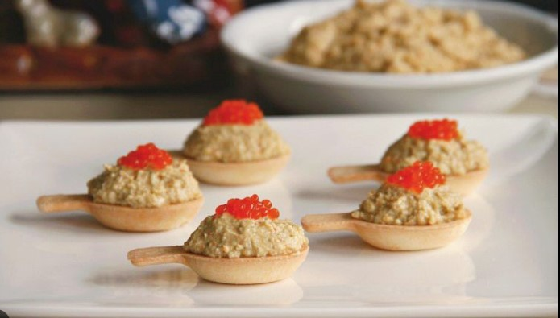
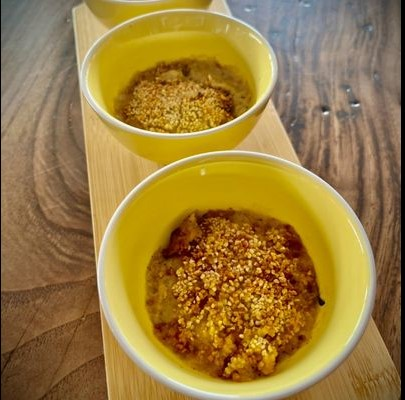
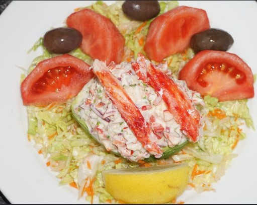
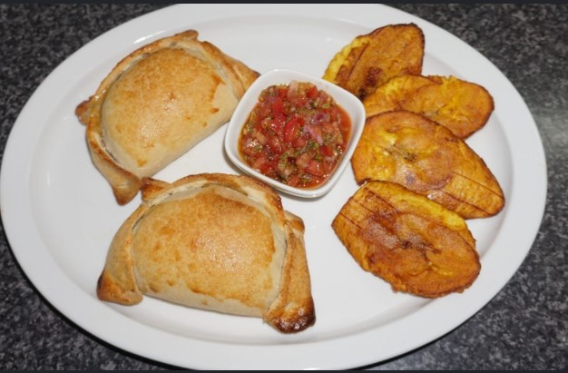
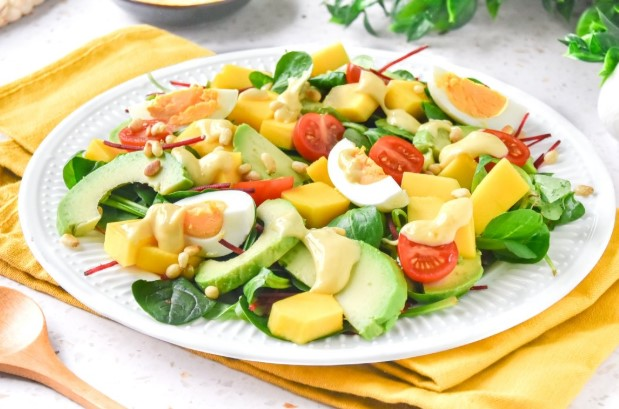

Ingredientes: huevos cocidos, palitos de cangrejo, mayonesa
Preparación: triturar los huevos, mezclar con palitos de cangrejo y mayonesa hasta obtener textura cremosa.
👤 Berta Álvarez

Ingredientes: centolla, leche, cebolla, pan
Preparación: sofreír cebolla, agregar centolla y leche, cocinar y licuar.
⏱️ 50 min

Ingredientes: centolla, palta, cebolla morada, cilantro
Preparación: mezclar centolla con ingredientes y rellenar la palta.
⏱️ 30 min

Ingredientes: centolla, camarones, mantequilla
Preparación: hacer relleno y hornear empanadas hasta dorar.
⏱️ 2 horas

Ingredientes: centolla, gambas, conchas
Preparación: cocinar mariscos en caldo con especias.
👥 4 personas

Ingredientes: spaghetti, centolla, tomate, ajo
Preparación: hacer salsa de tomate y mezclar con pasta y centolla.
⏱️ 40 min

Ingredientes: centolla, pan, queso, leche
Preparación: mezclar todo y gratinar al horno.
👤 Marta Ríos

Ingredientes: centolla, mango, palta, lechuga
Preparación: mezclar ingredientes frescos y aliñar.
⏱️ 20 min

Ingredientes: arroz, centolla, azafrán, vino blanco
Preparación: cocinar arroz lentamente y añadir centolla al final.
⏱️ 40 min

Ingredientes: centolla, leche, harina, huevo
Preparación: hacer bechamel, formar croquetas y freír.
⏱️ 30 min